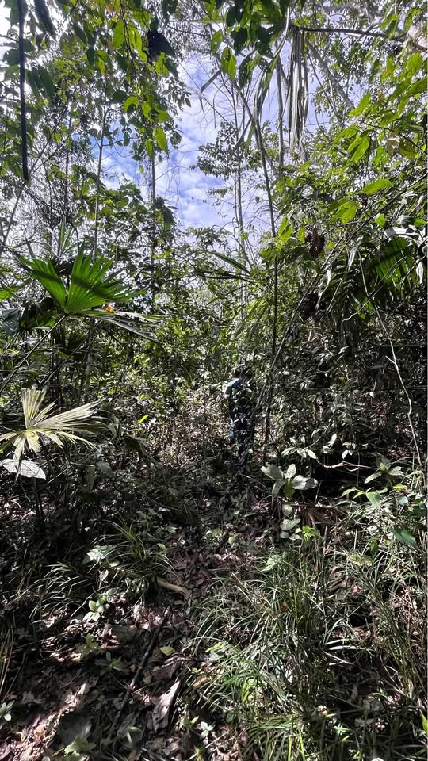

Precio desconocido 1.5 ha

DISPONIBLE EN ARRIENDO / USUFRUCTO A LARGO PLAZO 1.5 Hectáreas en San Roque de Cumbasa (San Martín) Predio natural privado ideal para proyectos ecológicos, permacultura, retiros, bioconstrucción o conservación. Puntos clave del terreno: * Agua constante todo el año: Cuenta con 3 vertientes/ojos de agua propios que alimentan directamente a la quebrada colindante * Ubicación y privacidad: Entorno natural y silencioso, rodeado de parcelas agrícolas de cacao. Libre de ruido de motores y contaminación. * Accesibilidad: Acceso vehicular hasta unos 150 metros del terreno; tramo final peatonal (sende